Planteamiento del Problema, Contexto Clínico y Ruido Eléctrico
En el ámbito del registro electrofisiológico, la adquisición de biopotenciales cardíacos enfrenta desafíos críticos de relación señal-ruido (SNR). Tal como se define en la teoría electromagnética, el ruido eléctrico comprende todas aquellas señales de interferencia, de origen eléctrico o inductivo, no deseadas que se acoplan a la señal útil alterando su morfología y produciendo distorsiones que invalidan la lectura clínica.
En un instrumento de alta sensibilidad como el electrocardiógrafo, convergen múltiples fuentes ambientales parásitas: luminarias de descarga o LED, conductores energizados e incluso regletas multienchufe cercanas, las cuales irradian campos electromagnéticos que inducen zumbidos de gran amplitud aun cuando los dispositivos conectados permanezcan apagados.
Si bien los electrocardiógrafos y osciloscopios clínicos comerciales disponen de interfaces para enlace con PC, sus licencias de software propietario suponen un costo recurrente de entre $500 USD y $1,000 USD. El objetivo prioritario de este desarrollo fue superar dicha barrera económica, concibiendo un sistema de telemetría de código abierto, accesible, económicamente viable y de alta confiabilidad metrológica para cualquier profesional o centro de investigación.
Caracterización Experimental Inicial: Señal Cruda y Registros de Fábrica
Los primeros ensayos realizados con el hardware estándar arrojaron resultados insatisfactorios. La señal registrada consistía exclusivamente en ruido estocástico de alta amplitud sin ninguna morfología cardíaca distinguible:
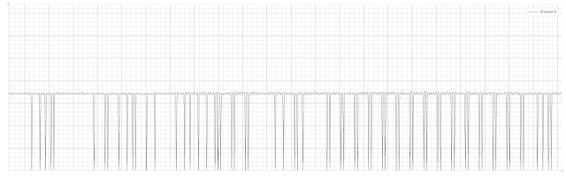
🔍 Zoom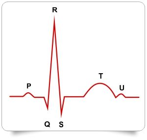
🔍 ZoomAnte la ausencia de componentes fisiológicos, se procedió a implementar estrictamente las recomendaciones de la Guía de Conexión del sensor AD8232 de SparkFun ↗ y su visualizador en Processing:
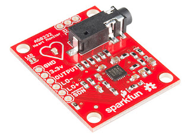
🔍 Zoom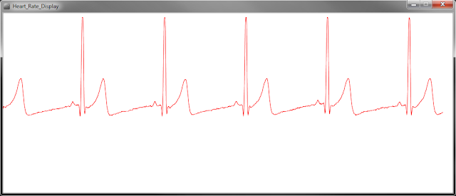
🔍 Zoom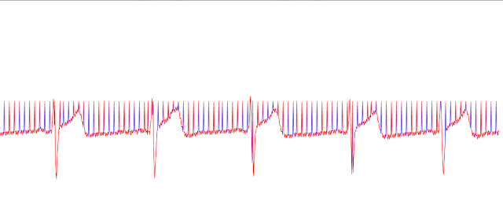
🔍 ZoomProtocolo de Aislamiento y Caracterización de Fuentes de Interferencia Electromagnética
Para depurar la señal, se diseñó un protocolo de aislamiento factorial para identificar el aporte individual de cada componente del entorno experimental. En primer término, se evaluó un escenario base de aislamiento electromagnético: estación portátil alimentada exclusivamente con batería interna, desconectada de la red eléctrica y apartada de equipos activos:
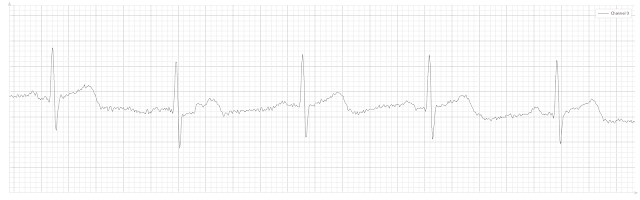
🔍 ZoomNo obstante, las condiciones clínicas reales de un protocolo de paro cardíaco demandan equipamiento auxiliar concurrente: iluminación focalizada mediante lámparas halógenas, camilla térmica para vasodilatación periférica en el sujeto, ventilador mecánico y telefonía celular. Se sometió el sistema a pruebas secuenciales agregando fuentes de interferencia una a una:
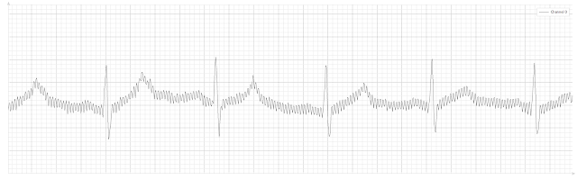
🔍 Zoom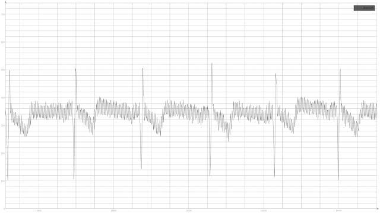
🔍 Zoom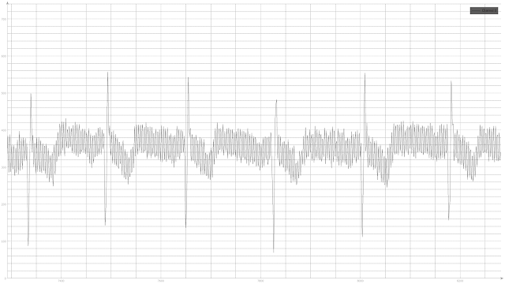
🔍 Zoom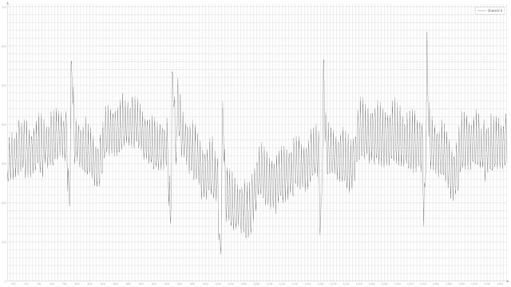
🔍 ZoomFinalmente, al conectar la estación a la red eléctrica y operar con todos los equipos auxiliares en funcionamiento simultáneo (iluminación, ventilación forzada y telefonía celular cargando), la señal biopotencial resultó totalmente enmascarada:
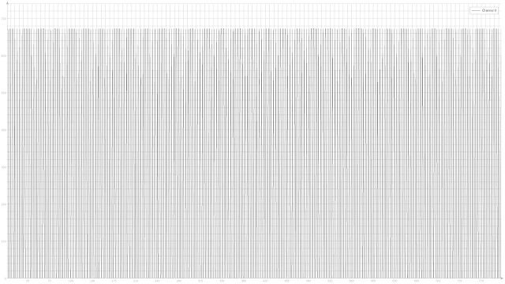
🔍 ZoomInnovación en Electrodos Secos: Pinzas Ergonómicas 3D y Triángulo de Einthoven
Los electrodos adhesivos de gel húmedo desechables (Ag/AgCl) suministrados comúnmente con los kits de desarrollo presentan severas desventajas prácticas: son de uso único, sufren desecación rápida que degrada la impedancia de contacto, dejan residuos en la piel y exigen la exposición precordial del torso del sujeto, lo cual resulta invasivo y poco ágil en entornos experimentales dinámicos:
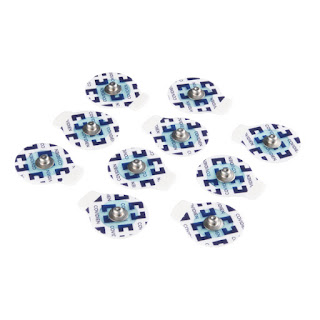
🔍 Zoom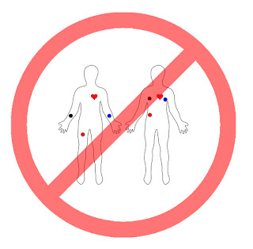
🔍 ZoomBajo el asesoramiento del cardiólogo colaborador, se aplicaron los principios biofísicos de la Ley y Triángulo de Einthoven: el registro de derivaciones bipolares periféricas (Derivaciones I, II y III) no exige estrictamente una fijación sobre el torso, siempre que los electrodos mantengan una geometría triangular equidistante respecto al vector cardíaco central. En consecuencia, se validó la toma de derivaciones en las falanges distales de los dedos:
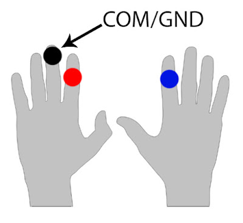
🔍 Zoom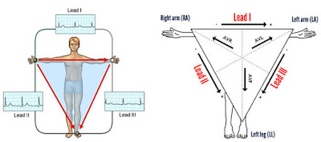
🔍 ZoomEsta configuración confiere versatilidad diagnóstica al investigador, permitiendo invertir rápidamente las derivaciones para registrar morfologías de onda invertidas o explorar signos patológicos particulares. Asimismo, se comprobó experimentalmente que el electrodo de referencia a tierra (GND / Pierna Derecha - RL) puede posicionarse con total estabilidad en el lóbulo de la oreja:
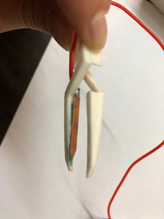
🔍 Zoom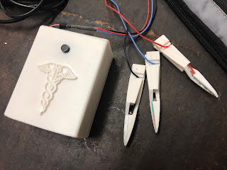
🔍 ZoomPara materializar esta solución de forma permanente y reusable, se diseñaron y modelaron en 3D pinzas anatómicas de presión constante equipadas con láminas de cobre electrolítico de alta pureza como contacto seco:
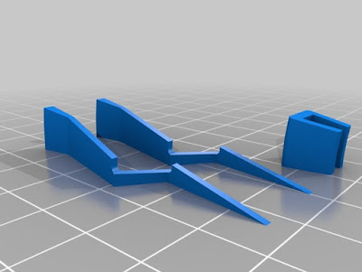
🔍 ZoomEvaluación de Estrategias de Filtrado: Hardware Analógico vs. Software Digital
La frecuencia fundamental del ruido de red comercial es de 50 Hz en Argentina y Europa, y de 60 Hz en Costa Rica y Norteamérica. En la literatura de ingeniería biomédica se describen diversas topologías de filtrado: pasa-bajos, FIR, filtros Butterworth de orden superior y promediado móvil. Inicialmente se exploró la implementación de filtros analógicos activos en hardware (etapas RC y operacionales adicionales):
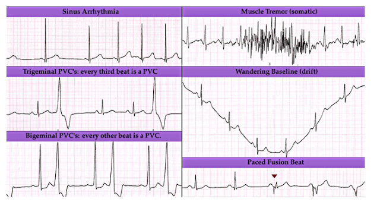
🔍 Zoom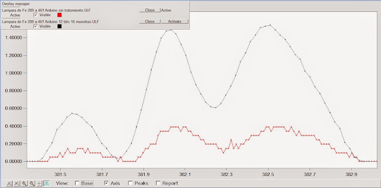
🔍 Zoom- Filtrado por Hardware Analógico: Atenúa simétricamente el ruido y la señal fisiológica. Adaptarlo a ruidos ambientales variables exigía una circuitería analógica tan costosa y compleja como fabricar un osciloscopio completo, contradiciendo el objetivo del proyecto.
- Filtrado Digital en MatLab / Simulink: La sobrecarga de procesamiento introducía un retraso crítico de 5 segundos entre el latido real y su representación visual, inaceptable para eventos agudos.
- Librerías de Sobremuestreo en Arduino: El ancho de banda del convertidor analógico-digital (ADC) interno del microcontrolador ATmega328P resultaba insuficiente para sostener simultáneamente el muestreo continuo y el filtrado digital en tiempo real.
Arquitectura Definitiva: Captura por Tarjeta de Audio (Micrófono) & DSP en Python
El avance determinante del proyecto consistió en comprender que los algoritmos de adquisición de audio de baja latencia a través de la tarjeta de sonido de la computadora eran óptimos para digitalizar la bioseñal cardíaca. Tanto una señal acústica analógica como la salida del sensor AD8232 son variaciones continuas de voltaje; la tarjeta de sonido del ordenador integra convertidores ADC de alta velocidad (44.1 kHz / 48 kHz), preamplificadores de bajo ruido y aislamiento natural del ruido del bus serie USB.
Se estructuró una aplicación en Python empleando las librerías PyAudio para el streaming de datos a baja latencia (<50 ms), PyQt5 para la arquitectura de la interfaz gráfica y pyqtgraph para el renderizado acelerado de la traza, integrando algoritmos de filtrado digital adaptativo con frecuencia de corte sintonizable en tiempo real:
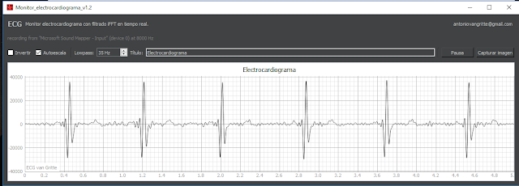
🔍 Zoom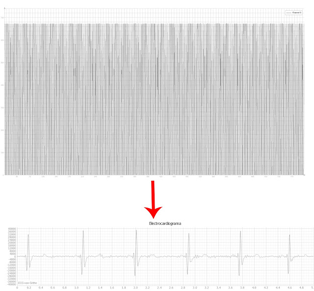
🔍 ZoomFundamento Físico: Superposición de Ondas (Efecto Young) & Autoescala Multiespecie
Un hallazgo biofísico fundamental del proyecto fue comprobar que la frecuencia de ruido dominante a mitigar no se ubicaba en los 50 Hz teóricos de la red eléctrica, sino en 35 Hz. Este fenómeno responde a las leyes de la física ondulatoria descritas en el experimento de la doble ranura de Thomas Young ↗:
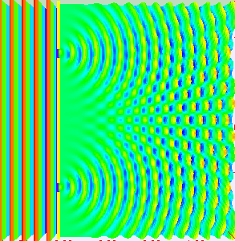
🔍 Zoom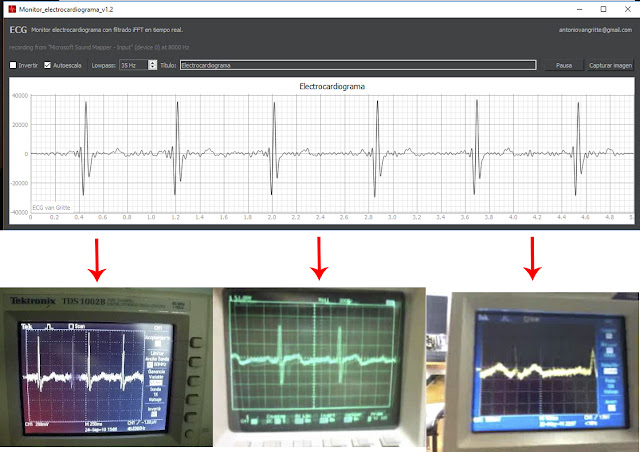
🔍 ZoomDado que en cada espacio físico las fuentes electromagnéticas varían, el software en Python incorpora un control dinámico que permite al usuario ajustar con precisión los Hz de filtrado según su entorno particular. Asimismo, la autoescala de voltaje normaliza de forma inteligente las lecturas, permitiendo su uso directo en investigaciones con pequeños roedores de laboratorio cuyos biopotenciales presentan amplitudes de microvoltios.
Esquema Eléctrico de Interconexión y Montaje de Hardware
A continuación se detalla el esquema de conexión maestro del sistema. El puerto analógico A0 del Arduino no se emplea para transmitir lecturas a la PC por USB; la bioseñal se toma directamente del pin OUTPUT del sensor AD8232 y se deriva a la entrada de micrófono (jack TRS 3.5 mm):
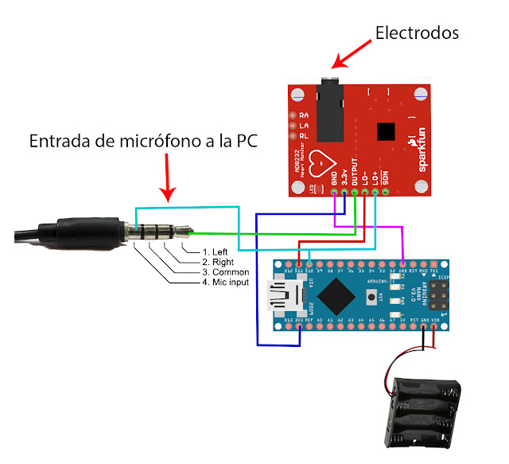
🔍 Zoom- Alimentación por Baterías DC: Se emplean baterías para energizar el circuito, desvinculando galvánicamente el sistema de la red eléctrica y del bus USB. Esto ahorra los $40 USD de un aislador de señal USB externo (el cual además sólo aislaría el puerto, no la radiación electromagnética captada por los electrodos que operan como antenas).
- Pines D10 y D11 de Arduino: Se configuran como entradas digitales conectadas a los pines LO- y LO+ del AD8232 para estabilizar las referencias y detectar electrodos desprendidos.
- Compatibilidad de Microcontrolador: Puede emplearse cualquier Arduino (Uno o Nano). Se seleccionó el Nano por su formato compacto. Para microcontroladores con chip CH340, instalar los controladores correspondientes y seleccionar "Old Bootloader" en el IDE de Arduino.
- Modo Comparativo Simultáneo: Si el usuario desea comparar simultáneamente el Serial Plotter de Arduino con el software en Python, puede conectar el cable USB desconectando previamente las baterías para evitar conflictos de alimentación.
Configuración del Subsistema de Audio en el Sistema Operativo
Para garantizar que el sistema operativo reconozca el conector de 3.5 mm como canal de entrada analógica de alta fidelidad, se accede al panel de configuración de sonido: clic derecho sobre el icono de audio de la barra de tareas de Windows → Sonidos → pestaña Grabación:
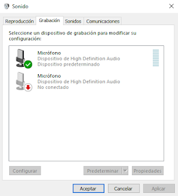
🔍 Zoom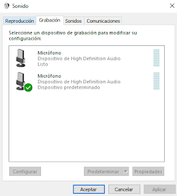
🔍 ZoomFirmware del Microcontrolador Arduino & Estandarización de Cableado
El microcontrolador Arduino ejecuta un firmware básico de estabilización de niveles de entrada. Si bien la bioseñal primaria viaja por el jack analógico, este código permite mantener los potenciales de referencia estables y permite alternar con el Serial Plotter si se desea realizar mediciones de validación cruzada:
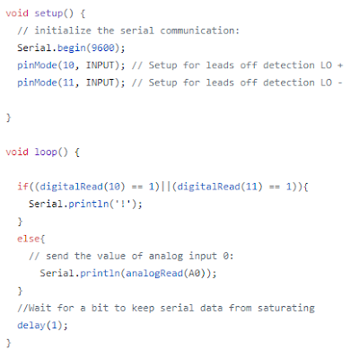
🔍 Zoom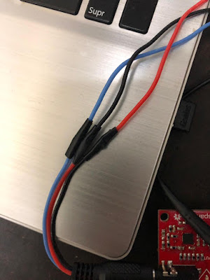
🔍 ZoomProtocolo de Medición, Demostración en Video y Blindaje Electromagnético Avanzado
Con el hardware conectado y el conector de audio reconocido, se procede a ejecutar el software en Python compilado (~200 MB con todas las librerías científicas empaquetadas; la descompresión inicial toma aproximadamente 40 segundos). El sujeto debe mantenerse relajado e inmóvil para prevenir artefactos electromiográficos (EMG) generados por temblores musculares. En residencias sin conexión a tierra física, se recomienda operar la computadora con la batería interna:
Para alcanzar la máxima inmunidad electromagnética en laboratorios con abundante radiación parásita, se integraron cuatro niveles de blindaje físico:
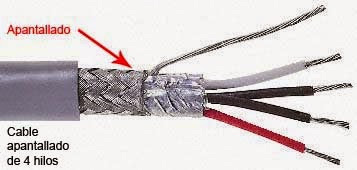
🔍 Zoom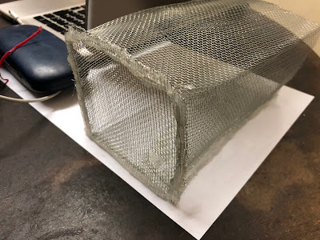
🔍 Zoom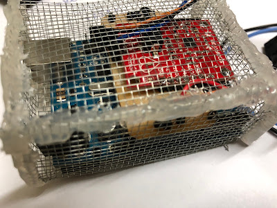
🔍 Zoom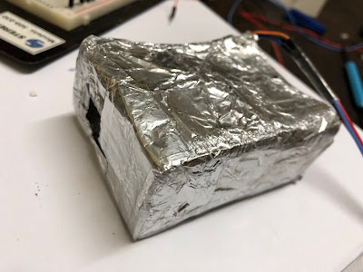
🔍 Zoom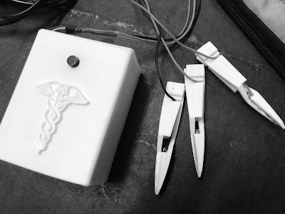
🔍 ZoomFabricación de Circuito Impreso (PCB) en Baquelita, Repositorio & Créditos
Para conferir máxima confiabilidad mecánica al instrumento y eliminar cables sueltos en protoboard, se diseñó un circuito impreso (PCB de simple faz en baquelita) optimizado para el Arduino Nano y el módulo AD8232:
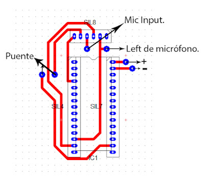
🔍 Zoom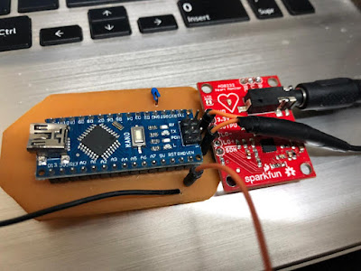
🔍 Zoom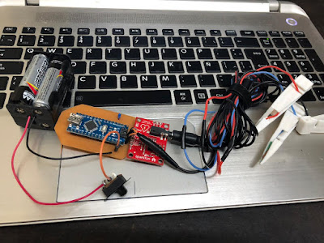
🔍 ZoomSoftware Compilado y Código Fuente Oficial (Licencia GPL)
Software totalmente gratuito y de código abierto bajo Licencia Pública General de GNU (GPL).
ESPECIFICACIONES TÉCNICAS CONSOLIDADAS
| Front-End Analógico (AFE) | Analog Devices AD8232 (SparkFun Heart Rate Monitor) con filtros activos pasa-altos de 2 polos y pasa-bajos de 3 polos |
| Controlador de Referencia | Arduino Nano (ATmega328P) para niveles lógicos de referencia, estabilización de línea base y detección de electrodos desconectados |
| Canal de Adquisición de Señal | Interfaz analógica de audio TRS 3.5 mm (ADC de entrada de línea / micrófono) con alta tasa de muestreo y bajo piso de ruido |
| Aislamiento Eléctrico | Banco autónomo de baterías DC (aislamiento galvánico total de la red eléctrica y de bucles de masa USB) |
| Electrodos de Biopotencial | Pinzas anatómicas 3D reutilizables con láminas de cobre de alta conductividad (derivaciones periféricas I, II y III de Einthoven) |
| Pipeline DSP y Filtrado | Motor en Python en tiempo real, filtro notch adaptativo dinámico (35 Hz - 60 Hz) y etapa pasa-bajos Butterworth (<50 ms de latencia) |
| Estándar de Visualización | Monocromo de alto contraste, ventana de barrido de 5.0 s, cuadrícula calibrada a 40 ms (0.04 s) y captura instantánea HD para investigación |
| Compatibilidad Multiespecie | Autoescala dinámica de voltaje: calibrado para ECG humano (~1 mV) y electrofisiología murina en microvoltios (ratas de laboratorio) |
| Estructura de Blindaje | Cable de audio coaxial blindado, Jaula de Faraday de malla metálica conectada a masa y barrera secundaria reflectora de RF |
| Licencia de Software | Código y diseño abierto bajo Licencia Pública General de GNU (GPL) |